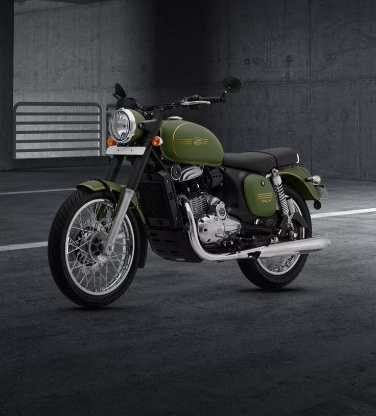

About Us
Availability: Jawa vintage bikes are available for rent in various cities across India, particularly popular in places like Goa, Bangalore, and Chennai.
Rental Costs: The cost to rent a Jawa vintage bike typically ranges from ₹1,000 to ₹2,500 per day, depending on the location, bike model, and rental duration.
Rental Services: Several rental agencies offer Jawa vintage bikes with options for hourly, daily, or weekly rentals. Many of these services include insurance, helmets, and roadside assistance as part of the package.